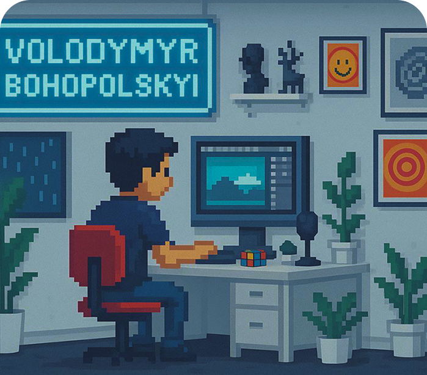

Choose one
Social Media
Branding
Motion



Biography:
Volodymyr Bohopolskyi was born on February 6, 2004, in Kyiv, Ukraine. Currently, he resides in Katowice, Poland, where he continues to grow both personally and professionally.
From a young age, Volodymyr was captivated by the world of visual aesthetics and technology, which naturally led him to pursue a career in graphic design. Over the years, he expanded his skills to include web design, where he merges his creative vision with technical expertise. He is particularly passionate about building websites, a hobby that has grown into a major part of his professional life.
In his professional career, Volodymyr works as a graphic designer, specializing in advertising, branding, and e-commerce visuals. He is dedicated to creating compelling designs that not only capture attention but also communicate his clients’ messages effectively and authentically.
Volodymyr takes pride in his ability to combine creativity with strategic thinking, and he continuously explores new tools, techniques, and design trends to stay at the forefront of the industry.